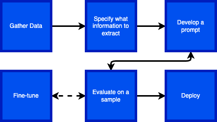
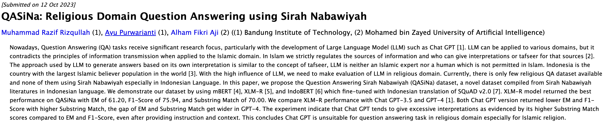
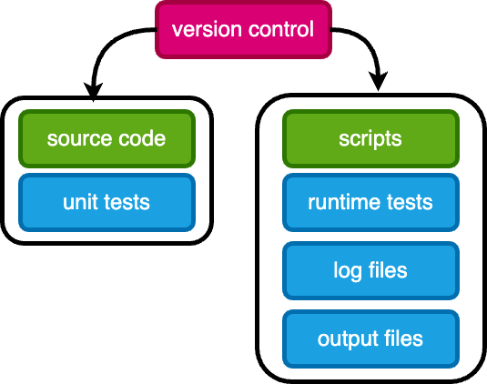

arXiv Information Extraction#
Research Idea
Identify LLM researchers, which sub-topics they are working on, and whether there is geographical specialization.
Who are the researchers?
Where they are located?
What topics do they work on? (future work)
Identify a dataset and specify precisely what you want to do with it
Engineer a prompt (use OpenAI Playground)
Evaluate performance on a sample
If performance is unacceptable, try further prompt engineering, functions, etc.
If performance is still not good enough, try fine-tuning
Deploy at scale
{kind=link}

Gather Data
Promising dataset: arXiv
Almost all LLM papers of note are posted here
PDF files are freely available (~2 million covering STEM fields)
Limited amount of metadata is also available
Downloaded ~20K recent papers, filtered for ones containing the phrase
Large Language Modelin the abstract. Resulting dataset ~1.7K PDFs + MetadataExtracted 1st page of text from each PDF
{kind=link}
import pandas as pd
df = pd.read_parquet("data/arxiv_metadata.parquet")
df.head()
---------------------------------------------------------------------------
ModuleNotFoundError Traceback (most recent call last)
Cell In[1], line 1
----> 1 import pandas as pd
3 df = pd.read_parquet("data/arxiv_metadata.parquet")
4 df.head()
ModuleNotFoundError: No module named 'pandas'
Specify what information to extract
title
list of author names
each author’s email address
each author’s affiliation
each affiliation’s location in terms of latitude and longitude
{ "title": "The paper's title",
"authors": [
{
"name": "author's name",
"email": "name@domain.edu",
"affiliations": [ "list of indices" ]
}
],
"affiliations": [
{"index": "the index",
"name": "The affiliation name",
"longitude": "the longitude",
"latitude": "the latitude"
}
]
]
}
{kind=link}
Develop a Prompt
There are various prompting strategies you can use to improve performance. OpenAI has a very good guide to help you out. They also provide lots of examples to look at.
Here are a couple of my tries:
Show code cell source
import os
import openai
from dotenv import load_dotenv
# load the .env file containing your API key
load_dotenv()
openai.api_key = os.getenv("OPENAI_API_KEY")
# from openai import OpenAI
# client = OpenAI()
# response = client.chat.completions.create(
# model="gpt-4-1106-preview",
# messages=[
# {
# "role": "system",
# "content": "You are an expert research librarian. You are precise and can analyze the structure of papers very well. You return information in json format.",
# },
# {
# "role": "user",
# "content": 'Extract the title and authors and affiliations from the first page of a scientific paper. \n\nUse the following step-by-step instructions to respond to user inputs.\n\nExtract the title and authors from the first page of a scientific paper. The paper text will snipped will be delimited by triple quotes. Geolocate each author affiliation with latitude and longitude.\n\nThe output should have the following format:\n\n{ "title": "The paper\'s title",\n "authors": [\n {\n "name": "Yong Ren",\n "email": null,\n "affiliations": [ "list of indices" ]\n }\n ],\n "affiliations": [ {"index": "the index", "name": "The affiliation name", "longitude": "the longitude", "latitude": "the latitude" } ]\n ]\n}\n\n"""\nFEWER-TOKEN NEURAL SPEECH CODEC WITH TIME-INVARIANT CODES\nYong Ren1,2, Tao Wang1, Jiangyan Yi1, Le Xu1,2, Jianhua Tao3, Chuyuan Zhang1,2, Junzuo Zhou1,2\n1Institute of Automation, Chinese Academy of Sciences, China\n2University of Chinese Academy of Sciences, China\n3Department of Automation, Tsinghua University, China\nABSTRACT\nLanguage model based text-to-speech (TTS) models, like VALL-E,\nhave gained attention for their outstanding in-context learning capa-\nbility in zero-shot scenarios. Neural speech codec is a critical com-\nponent of these models, which can convert speech into discrete token\nrepresentations. However, excessive token sequences from the codec\nmay negatively affect prediction accuracy and restrict the progres-\nsion of Language model based TTS models. To address this issue,\nthis paper proposes a novel neural speech codec with time-invariant\ncodes named TiCodec. By encoding and quantizing time-invariant\ninformation into a separate code, TiCodec can reduce the amount of\nframe-level information that needs encoding, effectively decreasing\nthe number of tokens as codes of speech. Furthermore, this paper\nintroduces a time-invariant encoding consistency loss to enhance the\nconsistency of time-invariant code within an utterance and force it\nto capture more global information, which can benefit the zero-shot\nTTS task. Experimental results demonstrate that TiCodec can not\nonly enhance the quality of reconstruction speech with fewer tokens\nbut also increase the similarity and naturalness, as well as reduce the\nword error rate of the synthesized speech by the TTS model.\nIndex Terms— speech codec, fewer tokens, time-invariant, lan-\nguage model, text-to-speech\n"""\n ',
# },
# ],
# response_format={"type": "json_object"},
# temperature=0,
# max_tokens=2048,
# top_p=1,
# frequency_penalty=0,
# presence_penalty=0,
# seed=42,
# )
Show code cell source
# import json
# data = json.loads(response.choices[0].message.content)
# print(json.dumps(data, indent=4))
Show code cell source
output = """
{
"title": "FEWER-TOKEN NEURAL SPEECH CODEC WITH TIME-INVARIANT CODES",
"authors": [
{
"name": "Yong Ren",
"email": null,
"affiliations": [
1,
2
]
},
{
"name": "Tao Wang",
"email": null,
"affiliations": [
1
]
},
{
"name": "Jiangyan Yi",
"email": null,
"affiliations": [
1
]
},
{
"name": "Le Xu",
"email": null,
"affiliations": [
1,
2
]
},
{
"name": "Jianhua Tao",
"email": null,
"affiliations": [
3
]
},
{
"name": "Chuyuan Zhang",
"email": null,
"affiliations": [
1,
2
]
},
{
"name": "Junzuo Zhou",
"email": null,
"affiliations": [
1,
2
]
}
],
"affiliations": [
{
"index": 1,
"name": "Institute of Automation, Chinese Academy of Sciences, China",
"longitude": "116.331398",
"latitude": "39.897445"
},
{
"index": 2,
"name": "University of Chinese Academy of Sciences, China",
"longitude": "116.651381",
"latitude": "40.12114"
},
{
"index": 3,
"name": "Department of Automation, Tsinghua University, China",
"longitude": "116.326443",
"latitude": "40.00368"
}
]
}
"""
Evaluate on a sample
To evaluate the perfomance of the GPT on your dataset, you need some way of externally validating it. At least a portion of your data must be labelled with the correct (or at least likely correct) output. This is called a gold standard.
Show code cell source
user_prompt_instructions = """
Extract the title and authors and affiliations from the first page of a scientific paper.
Use the following step-by-step instructions to respond to user inputs.
Extract the title and authors from the first page of a scientific paper. The paper text will snipped will be delimited by triple quotes. Geolocate each author affiliation with latitude and longitude.
The output should have the following format:
{ "title": "The paper's title",
"authors": [
{
"name": "Yong Ren",
"email": null,
"affiliations": [ "list of indices" ]
}
],
"affiliations": [ {"index": "the index", "name": "The affiliation name", "longitude": "the longitude", "latitude": "the latitude" } ]
]
}
"""
Show code cell source
from typing import Dict
import openai
def validate_response_data(data: Dict):
assert "title" in data, "title not found"
assert "authors" in data, "authors not found"
for auth in data["authors"]:
assert "name" in auth, "name not found"
assert "email" in auth, "email not found"
assert "affiliations" in auth, "affiliations not found"
assert "affiliations" in data, "affiliations not found"
for aff in data["affiliations"]:
assert "index" in aff, "index not found"
assert "name" in aff, "name not found"
assert "longitude" in aff, "longitude not found"
assert "latitude" in aff, "latitude not found"
def analyze_text(client: openai.Client, text: str) -> str:
response = client.chat.completions.create(
model="gpt-4-1106-preview",
messages=[
{
"role": "system",
"content": "You are an expert research librarian. You are precise and can analyze the structure of papers very well. You return information in json format.",
},
{
"role": "user",
"content": user_prompt_instructions + '\n\n"""' + text + '\n\n"""',
},
],
response_format={"type": "json_object"},
temperature=0,
max_tokens=2048,
top_p=1,
frequency_penalty=0,
presence_penalty=0,
seed=42,
)
try:
data = json.loads(response.choices[0].message.content)
print(data)
validate_response_data(data)
return json.dumps(data)
except Exception as e:
print(e)
return str(e)
client = openai.Client()
df_sample = df.sample(100, random_state=42)
df_sample['extracted_info'] = df_sample['text'].apply(lambda x: analyze_text(client, x))
df_sample.to_parquet("sample_output.parquet")
import pandas as pd
df_gold = pd.read_parquet("./data/arxiv_metadata.parquet")
df_extracted = pd.read_parquet("./data/extracted_data.parquet")
true_positives = []
false_positives = []
false_negatives = []
for id in df_extracted["id"]:
gold_authors = list(df_gold[df_gold["id"] == id]["authors"])[0]
gold_authors = {a.strip() for a in gold_authors.split(",")}
predicted = df_extracted[df_extracted["id"] == id]
predicted_authors = set(predicted["author"])
for author in predicted_authors:
if author in gold_authors:
true_positives.append((id, author))
else:
false_positives.append((id, author))
for author in gold_authors:
if author not in predicted_authors:
false_negatives.append((id, author))
# round precision to 2 decimal places
precision = round(len(true_positives) /
(len(true_positives) + len(false_positives)), 2)
# round recall to 2 decimal places
recall = round(len(true_positives) /
(len(true_positives) + len(false_negatives)), 2)
print(f"true_positives count: {len(true_positives)}")
print(f"false_positives count: {len(false_positives)}")
print(f"false_negatives count: {len(false_negatives)}")
print("precision:", precision)
print("recall:", recall)
true_positives count: 3884
false_positives count: 364
false_negatives count: 316
precision: 0.91
recall: 0.92
fp_sample = {fp[1] for fp in false_positives if fp[0] == "2310.08102"}
fn_sample = {fn[1] for fn in false_negatives if fn[0] == "2310.08102"}
print(f"False positives for id 2310.08102\n")
for fp in fp_sample:
print(f" {fp}")
print(f"\nFalse negatives for id 2310.08102\n")
for fn in fn_sample:
print(f" {fn}")
False positives for id 2310.08102
Alham Fikri Aji
Muhammad Razif Rizqullah
Ayu Purwarianti
False negatives for id 2310.08102
Ayu Purwarianti (1) and Alham Fikri Aji
(2) ((1) Bandung Institute of Technology
Muhammad Razif Rizqullah (1)
(2) Mohamed bin Zayed University of
Artificial Intelligence)
{kind=link}

Other Forms of Evaluation
Now let’s map these geo-coordinates to get a sanity check on how well GPT-4 did the geo-coding. This is not a substitute for a quantitivate analysis, but it does give us more confidence if it looks reasonable
Show code cell source
from ipywidgets import HTML
from ipyleaflet import Map, Marker, Popup, MarkerCluster
center = (42.0451, -87.6877)
map2 = Map(center=center, zoom=2, close_popup_on_click=True)
markers = []
for row in list(df_extracted.iterrows())[:100]:
marker = Marker(location=(row[1]["latitude"], row[1]["longitude"]))
message = HTML()
message.value = f"{row[1]['author']}: <b>{row[1]['affiliation']}</b>"
marker.popup = message
markers.append(marker)
map2.add_layer(MarkerCluster(markers=markers))
map2
Deploy
Deployment of this code to the full dataset requires pre-cautions:
Structure your code into source code (functions) along with unit tests
Functions are composed in scripts, which should have runtime tests and generate logs
All code (source, scripts, tests) need to be in source control, typically
gitSave logs and output files in a secure location. Do not modify them.
{kind=link}
